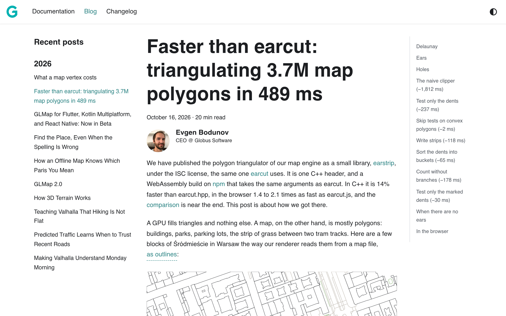
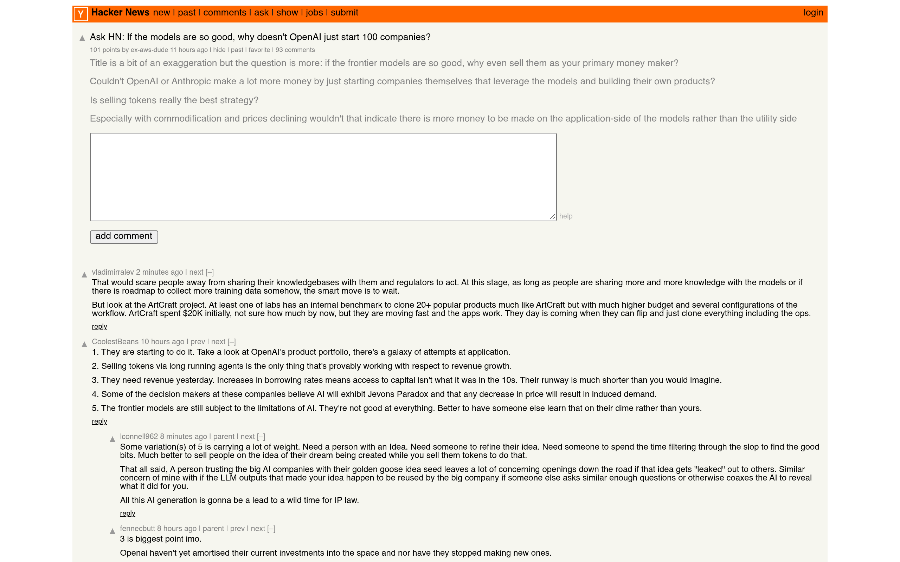
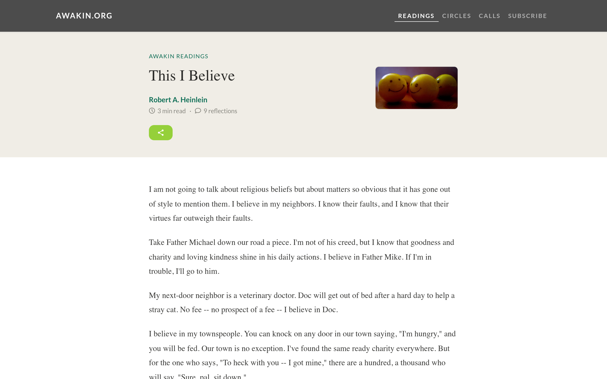
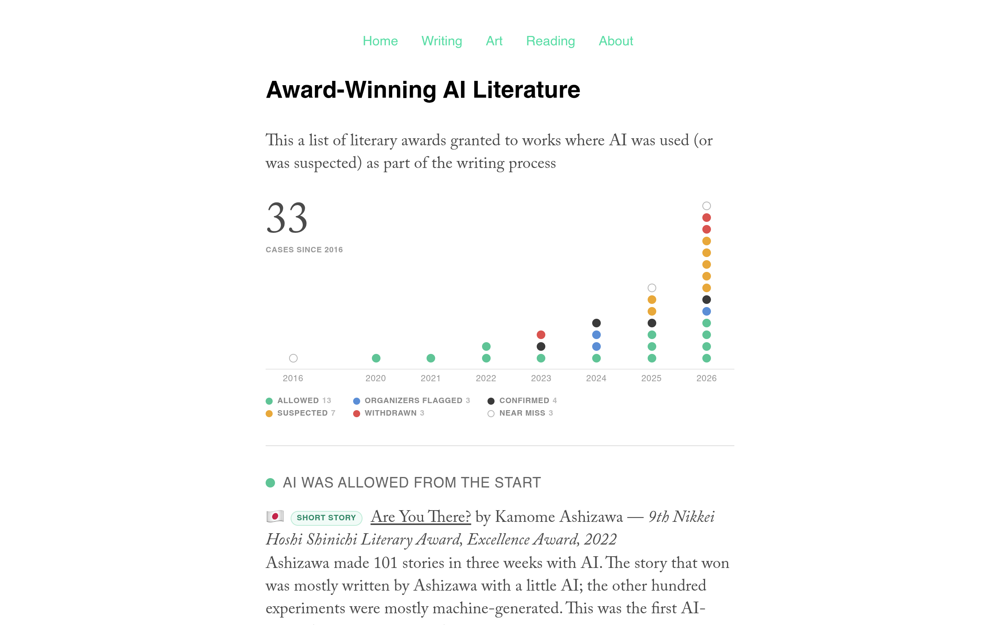
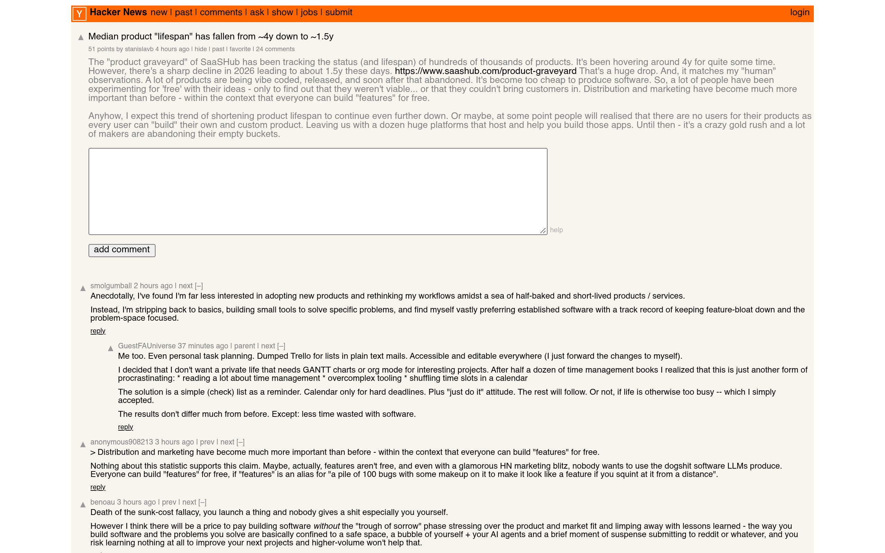
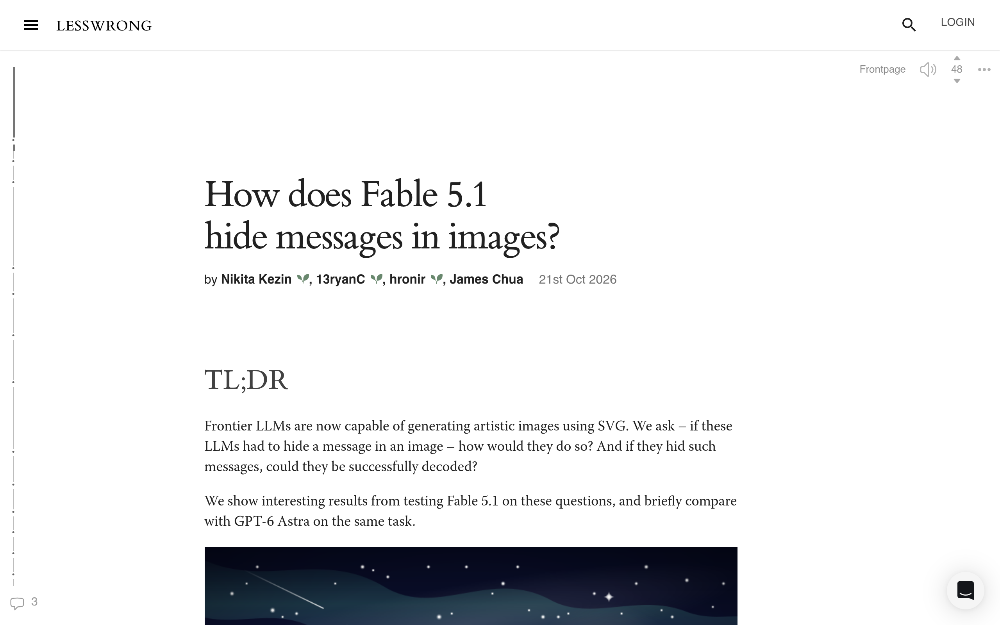
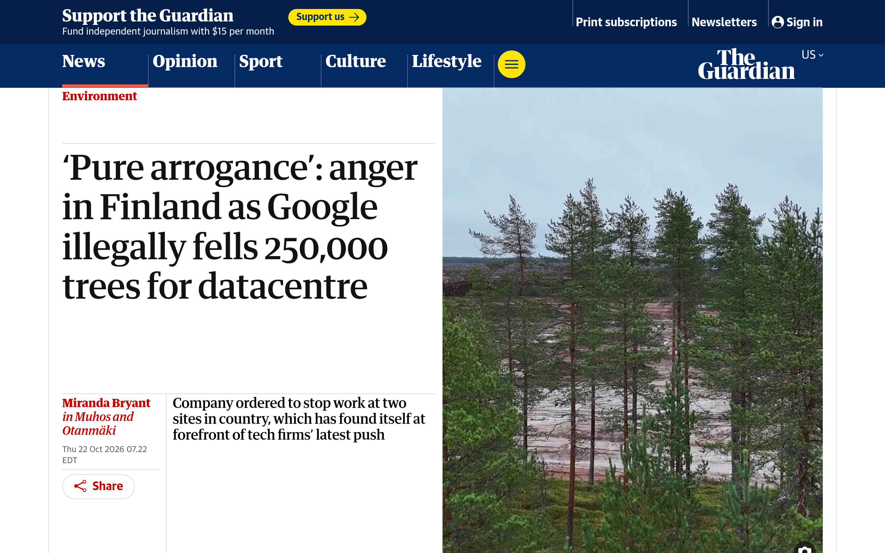

Y
Hacker News — Top 50
All history
Today
50 stories
Weeks
#1
Open site ↗
Quad9 to exit France
1161 ▲
💬 395
14:32 UTC
by farrokhi
💬 Discuss on HN
#2
Open site ↗
eMudhra to exit global SSL/TLS certificate business
1030 ▲
💬 671
13:33 UTC
by bo0tzz
💬 Discuss on HN
#3
Open site ↗
Woman charged with computer fraud due to scam CashApp account being in her name
631 ▲
💬 622
13:11 UTC
by oidar
💬 Discuss on HN
#4
Open site ↗
Tell HN: I unknowingly broke the PHP RCE embargo. I am sorry.
522 ▲
💬 207
10:11 UTC
by petecooper
💬 Discuss on HN
#5
Open site ↗
Run full iOS 16.5 firmware on Android Devices
416 ▲
💬 142
15:26 UTC
by aghuang
💬 Discuss on HN
#6
Open site ↗
Docker is weird
411 ▲
💬 196
23:45 UTC
by psxuaw
💬 Discuss on HN
#7
Open site ↗
Jared Kushner Hacked Phone Reveals Secret Negotiations, Millions in Transactions
403 ▲
💬 173
21:24 UTC
by ck2
💬 Discuss on HN
#8
Open site ↗
OpenShell – A safe, private runtime for fleets of autonomous AI agents
380 ▲
💬 187
17:44 UTC
by niemandhier
💬 Discuss on HN
#9
Open site ↗
Every AI model has the same "controversial" take on humans
376 ▲
💬 399
16:08 UTC
by rakannimer
💬 Discuss on HN
#10
Open site ↗
What’s getting pwned right now
363 ▲
💬 165
14:08 UTC
by mrkd
💬 Discuss on HN
#11
Open site ↗
CVE-2026-111943: Compromised Intermediate Certificate Authority
333 ▲
💬 120
08:51 UTC
by keks24
💬 Discuss on HN
#12
Open site ↗
LLMs are making formal software verification feasible at a much larger scale
326 ▲
💬 177
22:54 UTC
by johnbender
💬 Discuss on HN
#13
Open site ↗
Google cleared 300 hectares of Finnish forest
321 ▲
💬 235
15:32 UTC
by wetwater
💬 Discuss on HN
#14
Screenshot unavailable
Open site ↗
Xbox wants you to pay 24 to 40 cents per hour to stream games you bought
287 ▲
💬 255
11:42 UTC
by entryleveljobsc
💬 Discuss on HN
#15
Open site ↗
Getting ready to operate GNU Taler in Germany
276 ▲
💬 114
16:14 UTC
by dewey
💬 Discuss on HN
#16
Open site ↗
A farewell to Arc browser
264 ▲
💬 225
16:27 UTC
by suhdonghwi
💬 Discuss on HN
#17
Open site ↗
Amazon identifies Oct 17 PHP2Shell exploitation prior to public disclosure
263 ▲
💬 97
11:50 UTC
by cubefox
💬 Discuss on HN
#18
Open site ↗
MPs moving to restrict gambling ads in Canada
246 ▲
💬 129
14:26 UTC
by Teever
💬 Discuss on HN
#19
Open site ↗
Several Linux kernel vulnerabilities accidentally posted to public mailing list
245 ▲
💬 89
11:12 UTC
by mrkn1
💬 Discuss on HN
#20
Open site ↗
Local Wikipedia: Wikipedia, but only for things a half hour walk from you
228 ▲
💬 52
23:01 UTC
by sohkamyung
💬 Discuss on HN
#21

Open site ↗
Faster than earcut: triangulating 3.7M map polygons in 489 ms
216 ▲
💬 40
09:31 UTC
by molind
💬 Discuss on HN
#22
Open site ↗
Hedra is a 3D open world game I wrote from scratch while in highschool
181 ▲
💬 32
18:44 UTC
by maxilevi
💬 Discuss on HN
#23
Open site ↗
A complete bypass of eMudhra’s 1FA OTP login system
173 ▲
💬 53
19:14 UTC
by tensegrist
💬 Discuss on HN
#24
Open site ↗
Crystal 1.22
173 ▲
💬 97
13:20 UTC
by ksec
💬 Discuss on HN
#25
Open site ↗
The foolishness of "natural language programming" (1978)
136 ▲
💬 84
00:52 UTC
by xiaoyu2006
💬 Discuss on HN
#26
Open site ↗
Move Slow and Fix Things (2024)
133 ▲
💬 23
05:12 UTC
by ahmedhossamdev
💬 Discuss on HN
#27
Open site ↗
AI and the Enclosure of the Scientific Commons
133 ▲
💬 77
18:28 UTC
by jrepinc
💬 Discuss on HN
#28
Open site ↗
Semantic search across major museums
119 ▲
💬 30
12:40 UTC
by surprisetalk
💬 Discuss on HN
#29
Open site ↗
eMudhra to Exit Global SSL/TLS Certificate Business;
105 ▲
💬 2
13:17 UTC
by parimm
💬 Discuss on HN
#30

Open site ↗
Ask HN: If the models are so good, why doesn't OpenAI just start 100 companies?
101 ▲
💬 93
21:03 UTC
by ex-aws-dude
💬 Discuss on HN
#31
Open site ↗
Railpass
94 ▲
💬 23
21:38 UTC
by CharlesW
💬 Discuss on HN
#32
Screenshot unavailable
Open site ↗
Jank – The native Clojure dialect with seamless C++ interop
87 ▲
💬 6
23:56 UTC
by giancarlostoro
💬 Discuss on HN
#33
Open site ↗
AI analysis of CT scans finds 42.9% of patients have coronary inflammation
83 ▲
💬 41
18:02 UTC
by brandonb
💬 Discuss on HN
#34
Open site ↗
Most Americans Say AI Is Bad for Society, Oppose More Data Centers
81 ▲
💬 53
20:51 UTC
by karakoram
💬 Discuss on HN
#35
Open site ↗
Show HN: UI micro interactions prompts for AI
77 ▲
💬 42
18:32 UTC
by elwingo1
💬 Discuss on HN
#36
Open site ↗
The same AI request emits 8.5 times more CO2 in Texas than in Sweden
76 ▲
💬 50
06:41 UTC
by jlundberg
💬 Discuss on HN
#37

Open site ↗
This I Believe (1952)
69 ▲
💬 24
02:19 UTC
by ctoth
💬 Discuss on HN
#38

Open site ↗
Award-winning AI literature
59 ▲
💬 69
18:28 UTC
by jamesjyu
💬 Discuss on HN
#39

Open site ↗
Median product "lifespan" has fallen from ~4y down to ~1.5y
51 ▲
💬 24
03:20 UTC
by stanislavb
💬 Discuss on HN
#40

Open site ↗
How does Fable 5.1 hide messages in images?
50 ▲
💬 8
21:41 UTC
by gmays
💬 Discuss on HN
#41
Open site ↗
Never-Before-Seen Images Reveal Damage at U.S. Bases in Middle East
49 ▲
💬 2
00:16 UTC
by slowin
💬 Discuss on HN
#42
Open site ↗
AI compute is the new oil–and needs a new market
46 ▲
💬 47
23:45 UTC
by ijidak
💬 Discuss on HN
#43
Open site ↗
Achieving AI-style reasoning without an LLM
46 ▲
💬 31
08:46 UTC
by edwardchalk
💬 Discuss on HN
#44
Open site ↗
Where Wealth Is Moving in America (2023)
44 ▲
💬 94
16:22 UTC
by hihetej
💬 Discuss on HN
#45
Open site ↗
Iceye and Nokia partner with Ukraine to develop satcom capability
41 ▲
💬 2
18:09 UTC
by cl-coder
💬 Discuss on HN
#46
Screenshot unavailable
Open site ↗
SBD: We Have a Filesystem at Home
40 ▲
💬 28
13:09 UTC
by torutofu
💬 Discuss on HN
#47

Open site ↗
'Pure arrogance': anger in Finland as Google illegally fells 250k trees
40 ▲
💬 5
12:17 UTC
by Symbiote
💬 Discuss on HN
#48
Screenshot unavailable
Open site ↗
Meta strikes deal with Zuckerberg to protect him from California wealth tax
39 ▲
💬 32
10:40 UTC
by samizdis
💬 Discuss on HN
#49
Screenshot unavailable
Open site ↗
UN says breaching 1.5C warming limit is 'imminent and unavoidable'
38 ▲
💬 22
23:37 UTC
by dabinat
💬 Discuss on HN
#50
Screenshot unavailable
Open site ↗
Show HN: OnKey – I'm a bad singer, so I built an app to show where I'm off-key
38 ▲
💬 16
14:04 UTC
by dsmurrell
💬 Discuss on HN